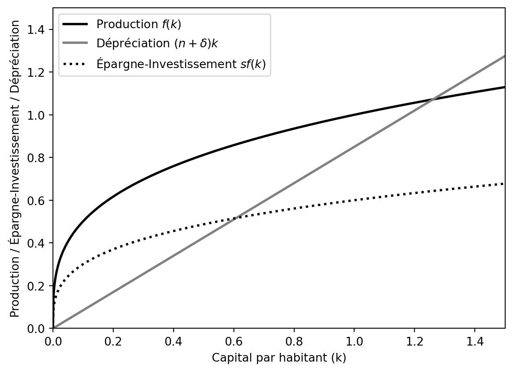
3 Le modèle de Solow
3.1 Introduction
Selon les données, la plupart des économies montrent un taux de croissance à long terme. Le modèle de Solow étudie si cela est compatible avec la simple accumulation de capital physique. Le terme “accumulation de capital physique” signifie que les agents économiques épargnent une partie de leurs revenus, et que cette épargne est investie pour devenir productive. Par exemple, on peut penser (ceci ne fait pas partie du modèle) que les ménages épargnent un pourcentage de leur revenu, qui est déposé auprès de la banque. Les entreprises empruntent cet argent pour investir dans de la machinerie, ce qui leur permet de produire davantage. Finalement, les ménages reçoivent un rendement sur leur épargne.
Les données suggèrent que cette approche pourrait être correcte. Entre 1960 et 2000, le taux de croissance moyen était de 1.8% et le taux d’investissement moyen de 16%. Pour les pays les plus pauvres, la croissance était seulement de 0.6% avec un investissement de 10%, tandis que les pays de l’est de l’Asie ont connu un taux de croissance de 4.9% avec un investissement de 25% 1.
Les théories néoclassiques modernes (depuis Ramsey-Cass-Koopmans) commencent l’analyse par des unités décentralisées : d’un côté les ménages, de l’autre les entreprises. On suppose que les agents sont rationnels, que l’offre et la demande déterminent les prix des facteurs de production, et que les marchés sont concurrentiels (avec des modifications ici). Les ménages offrent du travail et du capital, les entreprises embauchent les travailleurs et louent le capital, les ménages épargnent, etc.
Le modèle de Solow est différent et plus simple, car il fonctionne avec des agrégats macroéconomiques. Il suppose une fonction de production avec des inputs et se focalise sur l’évolution agrégée de ces inputs sans modéliser le comportement individuel. Par conséquent, il n’y a pas de marchés. D’autres hypothèses simplificatrices s’ajoutent au modèle : l’économie est fermée (pas de commerce international) et le gouvernement est absent.
On étudie d’abord le modèle de Solow sans croissance technologique, puis on l’ajoute par la suite. En effet, l’analyse mathématique est la même, et l’effet de la croissance technologique ne complexifie pas le modèle. Des connaissances en analyse et en calcul différentiel sont nécessaires au niveau mathématique.
3.2 Hypothèses
Le modèle suppose une économie fermée sans gouvernement. Un seul bien homogène existe et le taux d’épargne est constant et fixé de manière exogène. Le capital physique se déprécie à un taux constant et exogène. Le nombre de travailleurs augmente à un taux constant et exogène. Finalement, le modèle de Solow décrit l’économie de manière agrégée, c’est-à-dire, on ne modélise pas les agents individuels (producteurs et consommateurs).
3.2.1 Fonction de production
Dans le modèle de base, l’économie produit un seul bien homogène (\(Y\)) à l’aide d’une fonction de production. Dans l’économie, seuls deux facteurs de production existent : le capital physique (\(K\)) et le travail (\(L\)). La fonction de production combine ces deux inputs pour produire l’output. Le temps dans le modèle est continu. La fonction de production est :
- Homogène de premier degré (pour tous les facteurs de production rivaux)
- La production est croissante pour tous les facteurs de production
- Montre des rendements décroissants
- Satisfait les conditions d’Inada
Ces hypothèses sur la fonction de production sont essentielles pour trouver les résultats du modèle.
3.2.1.1 Homogénéité de premier degré
Hypothèse cruciale
Une fonction est homogène de premier degré si le fait de dupliquer les facteurs de production double la quantité produite. Cette hypothèse semble raisonnable : si une usine avec 10 machines et 50 travailleurs produit 500 unités de production, alors en créant une deuxième usine identique, on obtiendra un total de 1000 unités de production avec 20 machines et 100 travailleurs.
Mathématiquement, une fonction est homogène de premier degré si : \[ F\left[\lambda K, \lambda L\right] = \lambda F\left[K, L\right], \lambda \geq 0 \tag{3.1}\]
3.2.1.2 Production croissante
Cette hypothèse est logique : si la quantité de capital ou de travail augmente, on produit davantage. Mathématiquement, la production est croissante si :
\[ F^{\prime}_{K} F[K, L] > 0, F^{\prime}_{L} F[K, L] > 0 \tag{3.2}\]
Où \(F^{\prime}_{X}\) indique la dérivée première par rapport à la variable \(X\).
3.2.1.3 Rendements décroissants
L’idée des rendements décroissants est centrale dans la théorie économique. Cette hypothèse indique que chaque fois que l’on augmente la quantité d’un facteur de production, la production augmente, mais de moins en moins. Par exemple, avec 10 machines et 50 travailleurs, la production est de 500 unités. En passant de 10 machines à 20 machines (sans changer le nombre de travailleurs), la production augmente de 100 unités, passant de 500 à 600. Cependant, si l’on ajoute 10 machines supplémentaires pour un total de 30, la production n’augmente que de 50 unités, passant de 600 à 650.
Mathématiquement, les rendements décroissants impliquent :
\[ F^{\prime \prime}_{K} F[K, L] < 0, F^{\prime \prime}_{L} F[K, L] < 0 \tag{3.3}\]
Où \(F^{\prime \prime}_{X}\) indique la dérivée seconde par rapport à la variable \(X\).
3.2.1.4 Conditions d’Inada
Hypothèse cruciale
Les conditions d’Inada sont une série de conditions qui décrivent le comportement de la fonction de production lorsque les facteurs de production (\(K\) et \(L\)) sont rares ou abondants. Ces conditions indiquent que la productivité marginale du travail et du capital est élevée lorsque ces facteurs sont proches de zéro, et qu’elle diminue à mesure que ces facteurs deviennent plus abondants.
Mathématiquement, les conditions d’Inada sont les suivantes :
\[ \begin{aligned} \lim_{K\rightarrow 0}F^{\prime}_{K}\left[K, L\right] &= \infty, \\ \lim_{L\rightarrow 0}F^{\prime}_{L}\left[K, L\right] &= \infty, \\ \lim_{K\rightarrow \infty}F^{\prime}_{K}\left[K, L\right] &= 0, \\ \lim_{L\rightarrow \infty}F^{\prime}_{L}\left[K, L\right] &= 0 \end{aligned} \tag{3.4}\]
3.2.1.5 Les inputs sont essentielles pour la production
Parfois, on ajoute un condtion additionelle indiquant que chaque input, capital et travail, sont essentiels pour la production. Cela veut dire que, si l’un de ces facteurs est zéro, la production est nulle. Mathématiquement: \[ F[K,0] = F[0, L] = 0 \tag{3.5}\]
Cette hypothèse peut de démontrer à partir des autres hypothèses et n’est pas essentielle (voir page 77 de Barro et Sala-i-Martin ).
3.2.2 Fonction de production Cobb-Douglas
Dans ce qui suit, pour simplifier l’analyse, nous utiliserons la fonction de production Cobb-Douglas pour toute l’analyse :
\[ Y(t) = F\left[K(t), L(t)\right] = K(t)^\alpha L(t)^{1-\alpha}, \alpha \in (0,1) \tag{3.6}\]
Cette fonction de production vérifie toutes les hypothèses nécessaires du modèle.
3.2.3 Consommation et épargne
Dans tous les modèles économiques dynamiques, l’équation d’accumulation du capital est fondamentale. Elle indique comment le capital (physique et humain) augmente au fil du temps. Dans les modèles de Solow et de Ramsey-Cass-Koopmans simples, le seul type de capital considéré est le capital physique, qui représente l’ensemble des biens utilisés dans le processus de production et qui ne sont pas consommés.
Pour mieux comprendre, imaginons que l’économie produit \(Y\) unités du bien final. Comme il n’y a pas de gouvernement, toute la production doit être soit consommée par les agents, soit dédiée à l’investissement. Ainsi, une partie de cette production est destinée à la consommation des agents, notée \(C(t)\), pour en tirer de l’utilité2. Par conséquent (comme dans le modèle IS-LM), nous avons :
\[ Y(t) = C(t) + I(t). \tag{3.7}\]
En même temps, du point de vue des ménages, nous avons \(Y(t) - C(t) = S(t)\). C’est-à-dire que la partie qui n’est pas consommée correspond à l’épargne des ménages, notée \(S(t)\), qui représente l’ensemble des biens épargnés3. Cette épargne passe par le système bancaire et devient du capital productif à la période suivante. Cependant, comme nous ne modélisons pas le système bancaire, nous pouvons imaginer que les ménages prêtent directement des biens productifs aux entreprises. Par exemple, un ménage pourrait prêter une voiture à une entreprise, un autre pourrait prêter un bâtiment, etc. Ainsi, le niveau d’investissement est égal à l’épargne : \(I(t) = S(t)\).
3.2.4 Travailleurs
Dans le modèle simple de Solow, le nombre de travailleurs augmente à chaque période de manière exogène. Cela reflète l’interaction entre le taux de fécondité, le taux de mortalité, les migrations, etc. Pour les pays développés, ces taux sont plus ou moins stables et supposer que ces variables sont exogènes simplifie l’analyse. D’autres modèles plus complexes cherchent à modéliser le niveau de fécondité, qui a beaucoup varié au cours de l’histoire et qui diffère également selon le niveau de revenu. Dans le cadre du modèle de Solow, la population augmente simplement au taux \(n \geq 0\).
3.3 Variables par habitant
Quand on compare les différents pays pour les classer en fonction du revenu, on utilise généralement le revenu par habitant ou la production par habitant. En effet, si l’on considère \(Y(t)\) comme la production totale, il est normal que les pays les plus peuplés produisent davantage. Par exemple, le PIB (et non le PIB par habitant) de la Chine s’élève à environ 18 000 000 000 000 USD, tandis que celui du Luxembourg est seulement de 82 000 000 000 USD. Cependant, le niveau de richesse individuel est beaucoup plus élevé au Luxembourg, car la Chine compte environ 1 400 000 000 d’habitants contre seulement 650 000 au Luxembourg. Il est donc essentiel de mesurer le niveau de production par habitant afin d’établir des comparaisons appropriées et de comprendre pourquoi chaque individu est capable de produire davantage avec le développement. Les hypothèses du modèle, en particulier l’homogénéité de premier degré, nous permettent d’effectuer cette mesure.
3.3.1 Variables par habitant
Rappelons ce que signifie l’homogénéité de premier degré, c’est-à-dire que la fonction présente des rendements constants à l’échelle. une fonction est dite homogène de premier degré lorsque, si l’on multiplie les entrées par une même constante \(\lambda > 0\), la sortie est également multipliée par cette même constante. Ainsi, pour une fonction \(F\left[K(t), L(t)\right]\) ayant des rendements constants, cela signifie que \(F\left[\lambda K(t), \lambda L(t)\right] = \lambda F\left[K(t), L(t)\right]\) pour tout \(\lambda > 0\).
La définition est valable pour toute valeur de \(\lambda\), y compris lorsque \(\lambda = \frac{1}{L}.\) Ainsi, on peut écrire :
\[ Y = F[K, L] \stackrel{Hom.}{\implies} \frac{Y}{L} = F\left[\frac{K}{L}, \frac{L}{L}\right] = F\left[\frac{K}{L}, 1\right]=\frac{Y}{L}. \]
À partir de cette équation, on peut montrer que :
\[ Y(t) = L\ F\left[\frac{K}{L}, 1\right]. \]
Cette équation exprime le revenu total \(Y\) en fonction du facteur travail \(L\) et de la fonction de production \(F\left[\frac{K}{L}, 1\right]\), où \(\frac{K}{L}\) représente le capital par travailleur.
Pour simplifier la notation, on utilise les notations suivantes :
- \(k \equiv \frac{K}{L}\) : le niveau de capital par travailleur (ou par habitant)
- \(y \equiv \frac{Y}{L}\) : le niveau de production ou de revenu par travailleur (ou par habitant)
- \(f(k) \equiv F\left(\frac{K}{L}, 1\right)\) : la fonction de production en termes per capita, également appelée fonction intensive
Avec ces notations, nous pouvons réécrire l’équation précédente comme suit :
\[ y(t) = f(k(t)) \tag{3.8}\]
Cette équation exprime le niveau de production ou de revenu par travailleur \(y\) en fonction du niveau de capital par travailleur \(k\), en utilisant la fonction de production intensive \(f(k)\).
En appliquant ces méthodes à la fonction de production Cobb-Douglas :
\[\begin{align} Y &= F[K, L] = K^\alpha L^{1-\alpha} \implies \\ & \implies \frac{Y}{L} \equiv y = \frac{K^\alpha L^{1-\alpha}}{L} = K^\alpha L^{-\alpha} = \left(\frac{K}{L}\right)^\alpha = k^\alpha. \end{align}\]
Cela signifie que le niveau de production ou de revenu par travailleur \(y\) dans le modèle Cobb-Douglas est égal à la variable \(k\) élevée à la puissance \(\alpha\).
3.4 Dérivation des dynamiques
3.4.1 Équation d’accumulation de capital
Le modèle de Solow repose sur une hypothèse simplifiée : le taux d’épargne est le même pour tous les ménages à tout moment. En réalité, le taux d’épargne est fixé de manière exogène dans le modèle, ce qui en fait un paramètre. Nous notons le taux d’épargne par \(s\), qui représente la fraction de la production qui est épargnée. Il est important de noter que le taux d’épargne doit être compris entre 0 et 1, donc nous imposons \(0 \leq s \leq 1.\)
Comme nous l’avons mentionné précédemment, l’épargne et l’investissement sont convertis en capital productif pour la période suivante. Ainsi, l’épargne contribue à l’accumulation du capital : plus une économie épargne, plus rapidement le capital s’accumule. Cependant, cela entraîne également une réduction du niveau de consommation, car \(C(t) = Y(t) - S(t) = (1-s)Y(t).\) Si le taux d’épargne est élevé, le niveau de consommation doit nécessairement être réduit.
La dépréciation du capital neutralise l’accumulation réalisée grâce à l’épargne. Nous postulons qu’à chaque période, une fraction \(\delta \in (0,1)\) du capital accumulé devient obsolète et cesse d’être productif. Ainsi, si le niveau de capital est \(K(t), \delta K(t)\) unités deviennent non productives.
Dérivées par rapport au temps
Nous utilisons la notation “point” pour indiquer la dérivation par rapport au temps. Cela signifie que si nous avons une fonction \(x(t)\) qui dépend du temps, sa dérivée par rapport au temps est notée comme suit :
\[ \frac{\mathrm{d} x(t)}{\mathrm{d} t} = \dot{x}. \tag{3.11}\]
Origine
Tout à fait, en physique, la dérivée par rapport au temps d’une fonction qui décrit la position d’un objet donne sa vitesse instantanée à un instant donné. Par exempe, la position de l’individu est décrite par la fonction \(x(t) = 2t\) où \(x\) représente la position et \(t\) le temps.
Pour trouver la vitesse de cette personne, nous prenons la dérivée de la fonction \(x(t)\) par rapport au temps, notée \(\frac{\mathrm{d}x(x)}{\mathrm{d}t}\) ou \(\dot{x}\). Dans ce cas, la dérivée de \(x(t)\) par rapport à \(t\) est simplement 2. Donc, la vitesse de cette personne est \(\dot{x} = 2.\) Cela signifie que la personne avance à une vitesse constante de 2 mètres par seconde.
Avec les deux hypothèses précédentes, il est possible d’écrire l’équation d’accumulation de capital pour le modèle de Solow. La vitesse du capital, c’est-à-dire le changement de son niveau, est donnée par :
\[ \dot{K}(t) = I(t) - \delta K(t) = s F\left[K(t), L(t)\right] - \delta K(t). \tag{3.12}\]
Alternative
Une manière parfois plus intiuitive d’arrive au même résultat est de considérer le temps de manière discrète.
Ainsi, à \(t+1\), le niveau de capital est donné par :
\[ K_{t+1} = K_t + I_t - \delta K_t \]
Et l’augmentation de capital est de
\[ K_{t+1} - K_t = g(k_t) \]
Si en lieu d’avancer le temps d’une unité (une année) on l’avance de \(\Delta t\), l’augmentation sera de:
\[ K_{t+\Delta t} - K_t \approx \Delta t \cdot g(k_t) \]
où $ g(x(t)) $ est maintenant interprété comme un taux de flux par unité de temps, multiplié par la durée $ t $.
Le taux de changement moyen sur l’intervalle est : \[ \frac{K(t + \Delta t) - K(t)}{\Delta t} = g(K(t)). \]
En prenant la limite quand \(\Delta t \to 0\), on obtient l’équation différentielle: \[ \dot{K}(t) \equiv \frac{\mathrm{d} K(t)}{\mathrm{d} t} = \lim_{\Delta t \to 0} \frac{K(t+\Delta t) - K(t)}{\Delta t} = g(K(t)). \]
Une autre manière de dire le même est en partant du Théorème de Taylor qui indique que pour une fonction \(x(t)\) suffisamment régulière, on peut approximer \(x(t + \Delta t)\) par :
\[ x(t + \Delta t) \approx x(t) + \dot{x}(t) \Delta t. \]
Ainsi, \(x(t + \Delta t) - x(t) \approx \dot{x}(t) \Delta t\), et en divisant par \(\Delta t\) et en prenant la limite quand \(\Delta t\) tend vers zéro, on retrouve la définition de la dérivée.
Comme on le voit, l’équation d’accumulation de capital dépend de la production totale : \(\dot{K}(t) = s \underbrace{F\left[K(t), L(t)\right]}_{=Y(t)} - \delta K(t)\), et la production dépend du niveau de capital \(K(t)\) et du nombre de travailleurs \(L(t)\). Il est facile de calculer le nombre de travailleurs à un moment donné, car ils évoluent de manière exogène. Ainsi,
\[ L(t) = L(0)e^{nt}. \tag{3.13}\]
De manière alternative :
\[ \dot{L}(t) = \frac{\partial L(t)}{\partial t} = \frac{\partial L(0)e^{nt}}{\partial t} = n L(0)e^{nt}. \]
Ainsi, le taux de croissance de la population est :
\[ \frac{\dot{L}(t)}{L(t)} = \frac{n L(0)e^{nt}}{L(0)e^{nt}} = n. \]
3.4.2 Accumulation de capital par habitant
Pour l’instant, l’équation d’accumulation de capital est indiquée en termes de capital total. Il serait plus pratique de l’exprimer en termes de capital par habitant, car c’est l’unité principale du modèle (on ne compare pas le PIB de la Chine avec celui du Luxembourg, on compare le PIB par habitant). En plus, en le faisant, le modèle se simplifie car en lieu de deux variables (\(K\) et \(L\)), nous n’en avons plus qu’une seule (\(k\)). Ainsi, au lieu de \(\dot{K}\), nous voulons calculer \(\dot{k}\). Ce changement apparemment mineur est plus complexe qu’il n’y paraît.
Warning
Nous cherchons à calculer \(\dot{k} = \dot{\left(\frac{K}{L}\right)}\), où l’opérateur \(\cdot\) (dérivée par rapport au temps, opérateur vitesse) est appliqué à toute la fraction \(\frac{K}{L}\).
En fait, \(\dot{\left(\frac{K}{L}\right)}\) est équivalent à \(\frac{\mathrm{d}}{\mathrm{d}t}\left(\frac{K(t)}{L(t)}\right)\), c’est-à-dire la vitesse du capital par habitant. Cela diffère de :
- \(\dot{K} \rightarrow\) vitesse du capital (sans distinction de la population)
- \(\dot{K}\big{/}{L} \rightarrow\) vitesse du capital, divisée par la population
- \(\frac{\dot{K}}{\dot{L}} \rightarrow\) division de la vitesse du capital par la vitesse de la population.
Comme \(\dot{k} = \dot{\left(\frac{K}{L}\right)} = \frac{\mathrm{d}}{\mathrm{d} t}\left(\frac{K(t)}{L(t)}\right)\), il suffit d’appliquer les règles de dérivation4. Ainsi :
\[ \begin{aligned} \frac{\mathrm{d} \frac{K(t)}{L(t)}}{\mathrm{d} t} &= \frac{ \overbrace{\dot{K}(t)}^{\frac{\mathrm{d} K(t)}{\mathrm{d} t}} L(t) - \overbrace{\dot{L}(t)}^{\frac{\mathrm{d} L(t)}{\mathrm{d} t}}K(t)}{L(t)^2} \\ &= \frac{\dot{K}(t)}{L(t)} - \frac{\dot{L}(t)}{L(t)}\frac{K(t)}{L(t)} = \frac{\dot{K}(t)}{L(t)} - n k(t) \end{aligned} \tag{3.14}\]
Ici, nous avons utilisé \(\frac{\dot{L}(t)}{L(t)} = \frac{n L(0)e^{nt}}{L(0)e^{nt}} = n\) et défini \(k(t) \equiv \frac{K(t)}{L(t)}\).
Cependant, nous avons encore un problème : notre expression pour \(\dot{k}\) inclut \(\dot{K}\), ce qui la rend peu utile. Pour la simplifier, nous utilisons \(\dot{K} = s F[K,L] - \delta K\) (il est à noter que cette expression n’est pas par habitant). Ainsi, à partir de :
\[ \dot{k} = \frac{\dot{K}(t)}{L(t)} - n k(t) \]
si nous remplaçons \(\dot{K}(t)\) par \(\dot{K} = s F\left[K(t), L(t)\right] - \delta K(t)\), nous obtenons :
\[ \begin{aligned} \dot{k} &= \frac{\dot{K}(t)}{L(t)} - n k(t) = \frac{s F\left[K(t), L(t)\right] - \delta K(t)}{L(t)} - n k(t) = \\ &= s f(k(t)) - (n+\delta)k(t). \end{aligned} \]
Ainsi, l’équation d’accumulation de capital par habitant est :
\[ \dot{k} = s f(k) - (n + \delta) k. \tag{3.15}\]
L’Equation 3.15 est l’équation fondamentale du modèle de Solow. Avec la fonction de production Cobb-Douglas, elle devient \(\dot{k} = s k^\alpha - (n+\delta)k\).
L’équation fondamentale du modèle de Solow nous indique comment le capital par habitant change avec le temps, c’est-à-dire, c’est la vitesse du capital par habitant. On y voit un facteur positif qui accélère l’accumulation de capital par habitant et un autre facteur négatif qui le freine.
Facteur positif : \(s f(k)\) Il est lié à l’épargne. En effet, si les ménages épargnent davantage (\(s \uparrow\)) ou si la production par unité de capital est plus élevée (\(f(k) \uparrow\)), alors on accumule davantage de capital. On remarque que l’épargne est une fraction de la production totale.
Facteur négatif : \((n+\delta) k\)
On peut penser à \((n+\delta)\) comme étant le taux total de dépréciation du capital par habitant. D’un côté, si un plus grand nombre de machines deviennent inutilisables chaque année (\(\delta\) élevé), alors on perd du capital. D’un autre côté, ici on parle de capital par habitant. Ainsi, si la population augmente considérablement (\(n\) élevé), le nombre de machines par personne diminue (\(k\) diminue).
Il est possible de représenter graphiquement les deux contributions sur un même graphique, tel que la Figure 3.1 le montre
La courbe solide représente la fonction de production (intensive) : \(f(k) = k^\alpha\). On peut observer qu’elle vérifie toutes nos hypothèses :
- Croissante (\(f^\prime (k) > 0\))
- Concave (\(f^{\prime \prime} (k) < 0\))
- Pente forte lorsque \(k\) est proche de zéro (\(\lim_{k \rightarrow 0} f^\prime (k) = \infty\))
- S’aplatit lorsque \(k\) tend vers l’infini (\(\lim_{k \rightarrow \infty} f^\prime (k) = 0\))
- La courbe commence à zéro (\(f(0) = 0\))
La courbe en traits représente l’épargne-investissement. C’est, par définition dans le modèle, la fraction \(s\) de la production totale, et donc elle présente les mêmes propriétés que la fonction \(f(x)\).
Enfin, la droite grise représente le taux de dépréciation total, incluant la “vraie” dépréciation du capital (\(\delta\)) ainsi que l’érosion du capital par habitant due à l’augmentation de la population \(n\). La droite de dépréciation est une droite avec une pente constante égale à \(n+\delta\).
Il est possible de montrer que, en raison des propriétés des courbes, un point de croisement entre \(sf(k)\) et \((n+\delta)k\) existe.
Ce point de croisement est appelé état stationnaire et il constitue un élément crucial du modèle Solow et de tous les modèles dynamiques5.
Définition
Un état stationnaire est un point où les variables économiques clés ne changent plus dans le temps. Dans le modèle de Solow, cela signifie que le capital par habitant \(k\) atteint un niveau stable, où l’épargne-investissement compense exactement la dépréciation du capital et la croissance de la population.
Mathématiquement, cela se traduit par l’égalité suivante:
\[ \dot{k} = 0 \implies sf(k) = (n + \delta)k \]
Autrement dit, à l’état stationnaire, l’économie ne croît plus en termes de capital par habitant, même si la population continue d’augmenter.
3.5 Vers l’état stationnaire (existence et convergence)
De manière informelle, l’état (ou les états) stationnaires d’un modèle dynamique comme une configuration des variables dans laquelle les variables deviennent constantes une fois cette configuration est atteinte.
Le modèle de Solow a une seule équation dynamique: celle du capital par habitant (Equation 3.15). Avec une fonction de production Cobb-Douglas, on a:
\[ \dot{k} = s f(k) - (n+\delta)k = s k^\alpha - (n+\delta)k \]
Par exemple, avec \(s=0.5,\, \alpha=0.3,\, n=0.1\) et \(\delta=0.1\), lorsque le niveau de capital est de \(k=2\), on trouve \(\dot{k} = 0.21\). Cela signifie que le niveau de capital par habitant augmente de 0.21. Ainsi, à la période suivante, le capital est de 2.21 et il augmentera ensuite de seulement 0.19 (Vérifiez-le).
Comme la pente de la courbe \(f(k)\) et de \(sf(k)\) diminue lorsque \(k\) augmente, à mesure que le capital par habitant s’accumule, la vitesse d’accumulation se réduit. Cela est dû au fait que \(f^{\prime \prime}(k) = \alpha (\alpha-1)k^{\alpha-2} < 0\).
En même temps, chaque unité de capital par habitant subit un processus de dépréciation qui est constant. Par conséquent, si \(n+\delta = 0.2\), par exemple, avec 2 unités de capital, la dépréciation est de 0.4, et avec 2.21 unités, elle est de 0.442.
Imaginons une économie qui commence avec peu de capital (\(k(0) \approx 0\)). À ce niveau, la productivité du capital est très élevée (pente de la courbe \(f(k)\)). En même temps, avec peu de capital, la dépréciation est négligeable. Par conséquent, \(\dot{k} > 0\) et le capital s’accumule. Maintenant, le niveau de capital a augmenté, la productivité diminue et le coût de dépréciation augmente. Ainsi, la deuxième augmentation du capital est plus faible. Ce processus se poursuit et aboutit à un point où le capital cesse d’augmenter: l’état stationnaire.
Mathématiquement, si l’état stationnaire est le point où les variables du modèle ne changent plus, cela signifie que l’état stationnaire est caractérisé par \(\dot{k} = 0\). Cela correspond à:
\[ \dot{k} = 0 \implies sf(k) = (n+\delta)k \implies s k^\alpha = (n+\delta)k \]
Ainsi, si \(k^\star\) indique la valeur \(k\) qui correspond à l’état stationnaire, alors on a:
\[ sf(k^\star) = (n+\delta)k^\star \]
Avec une fonction de production Cobb-Douglas, deux états stationnaires sont possibles:
\[ k^\star = \begin{cases} \left(\frac{s}{n+\delta}\right)^{\frac{1}{1-\alpha}} \\ 0 \end{cases} \]
Solution
\[ \begin{aligned} s k^\alpha &= (n+\delta) k \implies s k^{\alpha-1} = n+\delta \implies k^{\alpha-1} = \frac{n+\delta}{s} \\ k^\star &= \left(\frac{n+\delta}{s}\right)^\frac{1}{\alpha-1} = \left(\frac{s}{n+\delta}\right)^\frac{1}{1-\alpha} \end{aligned} \]
En plus \[ s0^\alpha = (n+\delta)0 \]
Exactement, une fois que l’économie atteint le niveau de capital \(k^\star\), le capital cesse de changer et l’économie se stabilise à cet état stationnaire. Pour le vérifier, nous pouvons calculer le taux de variation du capital \(\dot{k}\) lorsque \(k=k^\star=\left(\frac{s}{n+\delta}\right)^\frac{1}{1-\alpha}\).
\[ \begin{aligned} \dot{k}{\big{|}_{k=k^\star}} &= s {k^\star}^{\alpha} - (n+\delta)k^\star \\ &= s \left(\frac{s}{n+\delta}\right)^\frac{\alpha}{1-\alpha} - (n+\delta)\left(\frac{s}{n+\delta}\right)^\frac{1}{1-\alpha} = \\ &= s s^\frac{\alpha}{1-\alpha}(n+\delta)^\frac{\alpha}{\alpha-1}-s^\frac{1}{1-\alpha}(n+\delta)(n+\delta)^\frac{1}{\alpha-1} = \\ & = s^\frac{1}{1-\alpha}(n+\delta)^\frac{\alpha}{\alpha-1}-s^\frac{1}{1-\alpha}(n+\delta)^\frac{\alpha}{\alpha-1}=0. \end{aligned} \]
L’autre état stationnaire:
\[ \dot{k} = s 0^\alpha -(n+\delta)0 = 0 \]
Par exemple, avec \(s=0.5,\, \alpha=0.3,\, n=0.1\) et \(\delta=0.1\), le niveau stationnaire du capital est \(k^\star = 3.7\). En vérifiant l’équation \(\dot{k}\big{|}_{k=3.7} = 0.5 \times 3.7^{0.3} - (0.1+0.1) \times 3.7 = 0\), nous constatons que le taux de variation du capital \(\dot{k}\) est nul à ce niveau stationnaire. Il est simple de vérifier que si \(k=0\), l’éparge est 0 et aussi la dépréciation.
3.5.1 Diagramme de phase
Nous pouvons illustrer la situation à l’aide d’un diagramme de phase qui montre \(\dot{k}\) en fonction de \(k\).
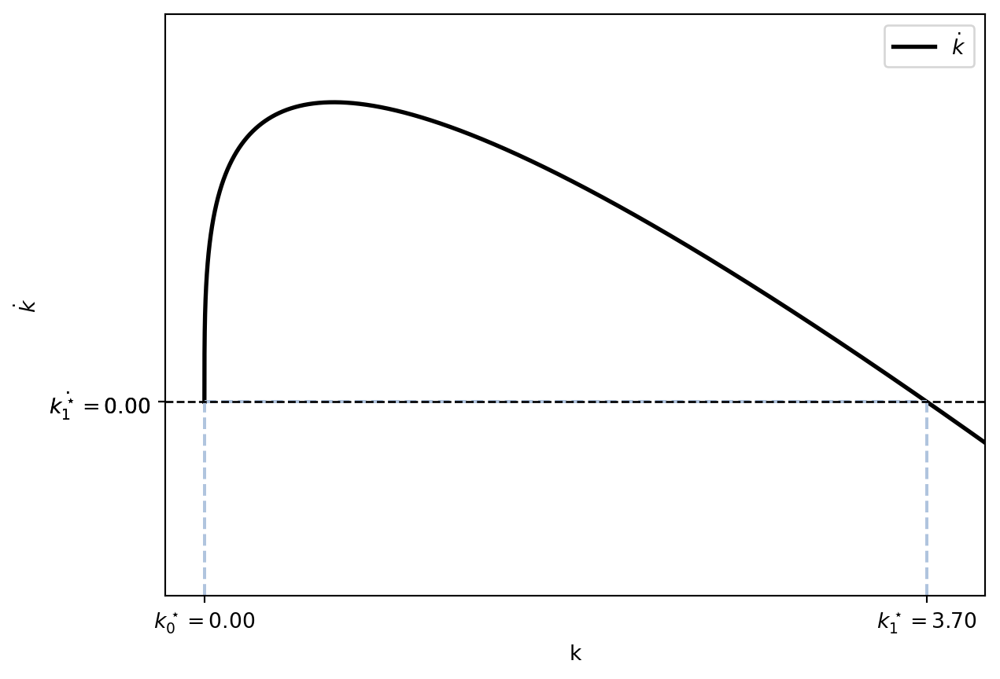
Dans ce diagramme, nous représentons directement la valeur de \(\dot{k}\) pour chaque valeur de \(k\). Si \(\dot{k} > 0\), cela signifie que l’économie accumule du capital, tandis que si \(\dot{k} < 0\), cela indique une perte de capital. La perte de capital résulte du fait que l’épargne n’est pas suffisante pour compenser la dépréciation.
Nous pouvons également observer que lorsque \(k\) est éloigné de \(k^\star\) (l’état stationnaire), \(\dot{k}\) est élevé, ce qui signifie que l’économie accumule du capital à un rythme rapide. À mesure que nous nous approchons de \(k^\star\), cette vitesse d’accumulation diminue.
3.5.2 Existence de l’état stationnaire
Une première question à aborder est l’existence d’un (ou plusieurs) état stationnaire.
Comme l’état stationnaire est défini par \(\dot{k} = 0\), nous cherchons les points où la courbe \(\dot{k} = s f(k) - (n+\delta)k\) croise l’axe horizontal.
À cause de l’hypothèse de nécessité, si \(k = 0\) alors \(f(k) = 0\) et donc \(\dot{k} = 0\). Cela signifie que \(k = 0\) est un état stationnaire. En mots: si on démarre avec une économie sans capital, il n’y a pas de production, et donc il n’y a pas d’épargne ni de dépréciation, et l’économie reste sans capital.
Cependant, celui-ci est un état stationnaire peu intéressant: avec une fonction de production selon laquelle \(f(0) > 0\), les conclusions seront les mêmes. En plus, comme on verra plus tard, cet état stationnaire est instable et l’économie ne s’approche jamais de \(k = 0\). Enfin, une économie sans capital ne peut pas produire, ce qui rend cet état stationnaire peu pertinent.
Pour ce deuxième état stationnaire, \(k > 0\).
Nous pouvons donc re-exprimer \(\dot{k} = 0\) comme suit:
\[ s\frac{f(k)}{k} - (n+\delta) = 0. \]
Quand \(k\rightarrow 0\), \(\frac{f(k)}{k} \rightarrow \infty\) (car \(f^\prime(0) = \infty\) et le théorème de L’Hôpital). Quand \(k\rightarrow \infty\), \(\frac{f(k)}{k} \rightarrow 0\) (car \(f^\prime(\infty) = 0\) et le théorème de L’Hôpital). Graphiquement la fonction \(s\frac{f(k)}{k} - (n+\delta)\) est représentée ci-dessous:
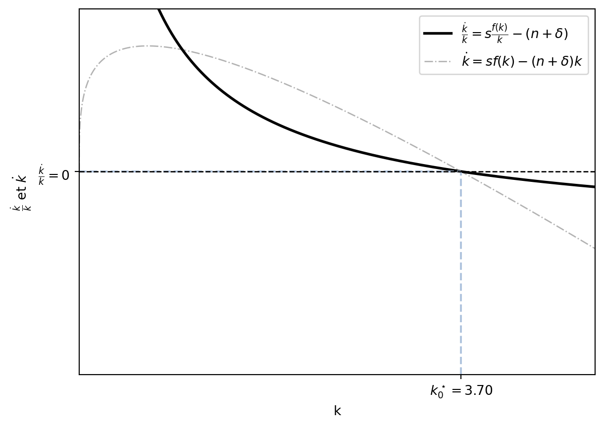
Enfin, la fonction \(s\frac{f(k)}{k} - (n+\delta)\) est décroisante (et continue) car \(f(k)\) est concave.
\[ \frac{\partial}{\partial k}\left(s\frac{f(k)}{k} - (n+\delta)\right) = s\frac{f^\prime(k)k - f(k)}{k^2} = - s \frac{w}{k^2} < 0 \]
Ainsi, selon le théorème des valeurs intermédiaires, il existe un point \(k^\star > 0\) tel que \(s\frac{f(k^\star)}{k^\star} - (n+\delta) = 0\).
3.5.3 Convergence
Un autre aspect important de l’état stationnaire est la convergence. Celà se demande si toute économie, indépendamment de son niveau initial de capital par habitant \(k(0)\), finit par atteindre le même état stationnaire \(k^\star\).
La réponse est oui. Nous allons le voir de manière mathématique et intuitive.
Mathématiquement
Nous devons montrer que pour tout \(k(0) > 0\), il existe un temps \(t\) tel que \(k(t) \to k^\star\). Pour cela, nous allons utiliser le théorème de Hartman-Grobman. En essence, il indique que les systèmes dynamiques non linéaires peuvent être analysés en termes de leurs comportements locaux autour des points d’équilibre. Le système dynamique dans le modèle de Solow bien qu’il n’a qu’une seule équation, est non linéaire à cause de la fonction de production \(f(k)\). En effet: \(\dot{k} = s f(k) - (n+\delta)k = s k^\alpha - (n+\delta)k\).
Le théorème de Hartman-Grobman explique que les comportements locaux autour des points d’équilibre peuvent être analysés en linéarisant le système. Pour cela, il faut analyser la stabilité des points d’équilibre en examinant la matrice jacobienne du système. Pour un système en temps continu, si tous les valeurs propres de la matrice jacobienne ont des parties réelles négatives, alors le point d’équilibre est asymptotiquement stable. Cela signifie que si l’économie s’écarte légèrement de l’état stationnaire, les forces en présence la ramèneront vers cet état.
Avec une seule équation, la matrice jacobienne est simplement la dérivée de la fonction \(\dot{k}\) par rapport à \(k\), évaluée à l’état stationnaire \(k^\star\).
\[ \frac{\partial \dot{k}}{\partial k} = s f^\prime(k) - (n+\delta) \]
Nous devons évaluer cette dérivée à l’état stationnaire \(k^\star\). Ansi:
\[ \frac{\partial \dot{k}}{\partial k}\big{|}_{k^\star} = s f^\prime(k^\star) - (n+\delta) \]
Nous savons qu’à l’état stationnaire, \(s f(k^\star) = (n+\delta)k^\star\). Par conséquent, nous pouvons remplacer \((n+\delta)\) dans la dérivée par \(\frac{s f(k^\star)}{k^\star}\).
\[ \begin{aligned} \frac{\partial \dot{k}}{\partial k}\big{|}_{k^\star} &= s f^\prime(k^\star) - (n+\delta) = \\ &= s f^\prime(k^\star) - \frac{s f(k^\star)}{k^\star} = \\ &= s\left[f^\prime(k^\star) - \frac{f(k^\star)}{k^\star}\right] = \\ &= s\left[\frac{f^\prime(k^\star) k^\star - f(k^\star)}{k^\star}\right] = \\ &= s\left[\frac{-s}{k^\star}\right] = -\frac{s^2}{k^\star} < 0 \end{aligned} \]
Il est évident que \(\frac{\partial \dot{k}}{\partial k}\big{|}_{k^\star} < 0\), ce qui signifie que l’état stationnaire est un point d’équilibre stable. Par conséquent, n’importe où l’économie démarre, elle convergera vers cet état stationnaire.
Attention: un deuxième état stationnaire existe à \(k=0\). Il est nécessaire de vérifier sa stabilité en évaluant la dérivée de \(\dot{k}\) à \(k=0\).
\[ \frac{\partial \dot{k}}{\partial k}\big{|}_{0} = s f^\prime(0) - (n+\delta) = \infty - (n+\delta) = \infty > 0, \]
car \(f^\prime(0) = \infty\) à cause des conditions d’Inada. Ainsi, l’état stationnaire \(k=0\) est un point d’équilibre instable ce qui signifie que si l’économie démarre avec un peu de capital, elle s’en éloignera et ne reviendra jamais à \(k=0\).
Cependant, si l’économie commence justement sur un état stationnaire, elle y restera, indépendamment de sa stabilité. En effet, un état stationnaire est un point tel que, si atteint, l’économie n’en bouge plus.
Intuitivement
Pour comprendre la convergence (et donc stabilité) de l’état stationnaire de manière intuitive, analysons les forces qui gouvernent l’évolution du capital par travailleur, \(k\). L’équation \(\dot{k} = s f(k) - (n+\delta)k\) nous dit que la variation du capital (\(\dot{k}\)) est la différence entre deux termes :
L’investissement brut par travailleur, \(s f(k)\) : une fraction \(s\) de la production, qui sert à créer du nouveau capital. L’investissement de remplacement, \((n+\delta)k\) : le montant nécessaire pour compenser l’usure du capital existant (\(\delta k\)) et pour équiper les nouveaux travailleurs qui arrivent en raison de la croissance démographique (\(nk\)). Imaginons une économie qui démarre avec un très faible niveau de capital par travailleur, \(k\). En raison de la productivité marginale décroissante, chaque unité de capital est très productive lorsque le capital est rare. La courbe de production \(f(k)\) est donc très pentue au départ. Par conséquent, l’investissement brut \(s f(k)\) est très élevé par rapport au niveau de capital. En parallèle, comme \(k\) est faible, l’investissement de remplacement \((n+\delta)k\) est lui aussi très faible. La situation est donc claire : \(s f(k) > (n+\delta)k\), ce qui signifie que \(\dot{k} > 0\). L’économie accumule plus de capital qu’elle n’en perd, et le stock de capital par travailleur augmente.
Maintenant, à mesure que ce capital \(k\) s’accumule :
La productivité marginale du capital diminue. La courbe d’investissement \(s f(k)\) s’aplatit. Chaque unité de capital additionnelle génère un surplus de production (et donc d’investissement) de plus en plus faible. L’investissement de remplacement \((n+\delta)k\) continue d’augmenter de manière linéaire. Il faut de plus en plus d’investissement juste pour maintenir le niveau de capital par travailleur. L’écart positif entre l’investissement brut et l’investissement de remplacement se réduit donc progressivement. L’accumulation de capital se poursuit, mais à un rythme de plus en plus lent (\(\dot{k}\) est positif mais décroissant).
Ce processus s’arrête lorsque l’économie atteint un niveau de capital \(k^\star\) où l’investissement brut est exactement égal à l’investissement de remplacement : \(s f(k^\star) = (n+\delta)k^\star\). À ce point, tout l’investissement sert à compenser l’usure et la dilution du capital. Il n’y a plus d’investissement net, donc \(\dot{k} = 0\). L’économie a atteint son état stationnaire.
Le graphique ci-dessous illustre cette dynamique. En partant d’un point \(k_{low}\), l’investissement brut (la courbe) est supérieur à l’investissement de remplacement (la droite), créant une variation positive \(\dot{k}\) qui pousse \(k\) vers la droite. Cet effet s’affaiblit à mesure que l’on s’approche de \(k^\star\), où les deux courbes se croisent et où le mouvement s’arrête.
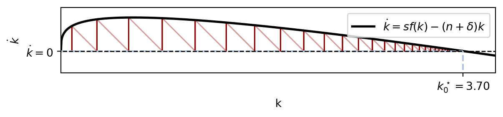
3.6 Changement du taux d’épargne
Dans le modèle de Solow, les différentes politiques mises en œuvre par les gouvernements sont plus susceptibles de modifier la valeur du taux d’épargne. Par exemple, pendant la période de la COVID, les ménages allemands ont épargné beaucoup plus que d’habitude. Il est naturel de se demander comment l’économie évolue suite à ce changement de paramètre6.
Imaginons que l’économie se trouve à son état stationnaire et que le taux d’épargne \(s\) augmente. Cela signifie qu’un nouvel état stationnaire apparaît : \(k^\star_{\text{new}} = \left(\frac{s_{\text{new}}}{n+\delta}\right)^\frac{1}{1-\alpha}\). Dans le graphique suivant, l’économie passe de la situation rouge à la noire. Avec un niveau de \(s\) plus élevé, elle atteint un niveau stationnaire plus important.
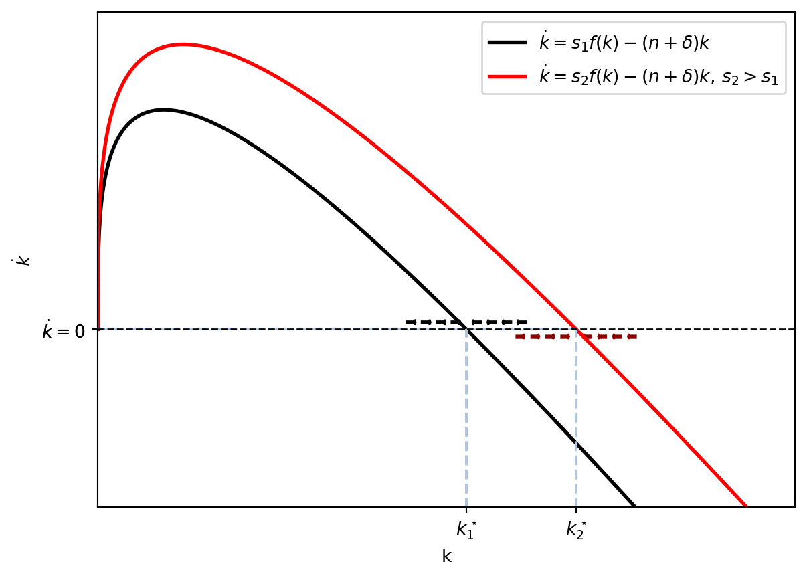
Par contre, la transition vers le nouvel état stationnaire n’est pas immédiate. Au moment où l’épargne change, l’économie se trouve avec un niveau de capital initial \(k_{t=0}\), et ce niveau de capital ne peut changer qu’avec le cycle épargne-investissement. Cependant, lorsque le taux d’épargne passe de \(s_{\text{old}}\) à \(s_{\text{new}}\), le niveau de capital se trouve à gauche du nouvel état stationnaire. Cela signifie que l’économie suit des changements dynamiques :
- Rappel : à l’état stationnaire, l’épargne compense exactement la dépréciation, et le niveau de capital \(k\) reste inchangé.
- Lorsqu’il y a une augmentation de l’épargne, l’économie commence à accumuler du capital, car maintenant ce qui est ajouté à l’économie est supérieur à ce qui est perdu en raison de la dépréciation.
- Par conséquent, le niveau de capital \(k\) augmente.
- À mesure que \(k\) augmente, la productivité marginale du capital diminue, ce qui signifie que chaque unité supplémentaire de capital contribue de moins en moins à la production totale.
- En même temps, à chaque augmentation de \(k\), la dépréciation augmente de manière linéaire.
- Finalement, l’économie atteint un nouveau état stationnaire où l’épargne compense à nouveau exactement la dépréciation, et le niveau de capital \(k\) se stabilise à une valeur plus élevée qu’auparavant.
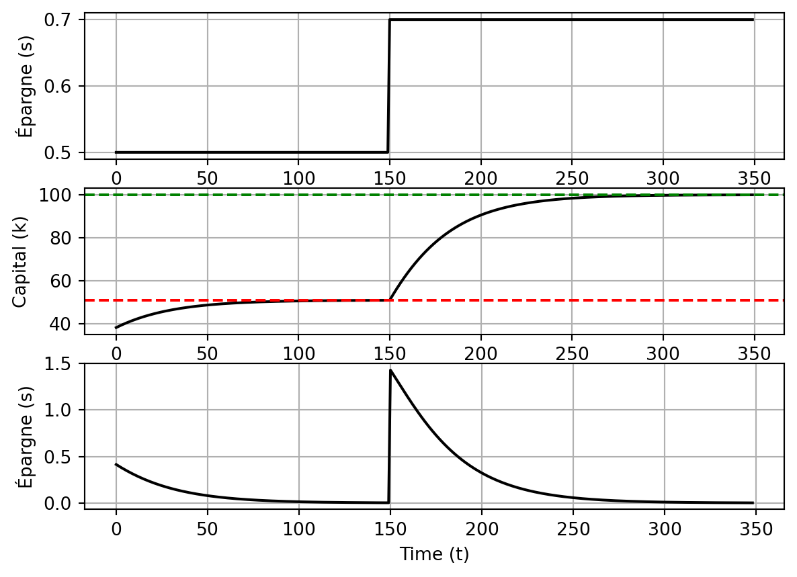
3.7 Règle d’or
Le modèle Solow montre que toute économie converge vers son état stationnaire. La valeur \(k^\star\) dépend du niveau d’épargne (entre autres choses) car, avec une fonction de production Cobb-Douglas : \(k^\star = \left(\frac{\color{red}{s}}{n+\delta}\right)^\frac{1}{1-\alpha}\). Il est aussi clair que, avec un taux d’épargne plus élevé (\(s\)), le niveau stationnaire augmente.
Exercice: montrez que le niveau \(k^\star\) augmente avec \(s\) (avec une fonction Cobb-Douglas).
Jusqu’à présent, notre analyse a porté sur l’évolution de \(k\), mais un niveau plus élevé de \(k\) n’implique pas plus de bien-être. En fait, ce qui est intéressant à regarder est le niveau de consommation. Rappelons que la consommation est la partie non épargnée : \(c = (1-s)f(k)\). Imaginons que l’économie se trouve à l’état stationnaire, ainsi la consommation stationnaire est \(c^\star = (1-s)f(k^\star)\). Avec un taux \(s\) faible, on consomme une grande partie de la production (terme \(1-s\)), mais on ne produit pas beaucoup car \(k^\star\) est petit (terme \(f(k^\star)\)). Et inversement, avec un taux d’épargne élevé, on produit beaucoup mais on consomme une fraction petite. Y a-t-il un niveau d’épargne optimal qui maximise la consommation à l’état stationnaire ?
La réponse est oui: la règle d’or (\(s_{\text{gold}}\)). À l’état stationnaire, \(c^\star = (1-s)f(k^\star) = f(k^\star) - \color{red}{sf(k^\star)}\). La définition d’état stationnaire est \(\dot{k} = sf(k^\star) - (n+\delta)k^\star = 0\). Par conséquent, à l’état stationnaire, nous avons que \(\color{red}{sf(k^\star) = (n+\delta)k^\star}\), et nous pouvons remplacer cette expression dans l’équation de consommation. Ainsi, nous avons :
\[ c^\star (s) = f(k^\star) - (n+\delta)k^\star. \]
Avec la fonction de production Cobb-Douglas, nous avons :
\[ c^\star (s) = {k^\star}^\alpha - (n+\delta)k^\star = \left(\frac{s}{n+\delta}\right)^\frac{\alpha}{1-\alpha} - (n+\delta)\left(\frac{s}{n+\delta}\right)^\frac{1}{1-\alpha} \]
car \(k^\star = \left(\frac{s}{n+\delta}\right)^\frac{1}{1-\alpha}.\)
Par définition, la règle d’or est le taux d’épargne qui maximise la consommation à l’état stationnaire. Ainsi, pour le trouver, il suffit de maximiser \(c^\star\) par rapport à \(s\).
\[ \begin{aligned} s_{gold} &= \arg \max_{s} c^\star(s) = f[k^\star(s)] - (n+\delta)k^\star(s) \\ & \frac{\mathrm{d} f[k^\star(s)] - (n+\delta)k^\star (s)}{\mathrm{d} s} = 0 \implies f^\prime (k_{gold}) = (n+\delta) \end{aligned} \]
Avec la fonction de Cobb-Douglas, on peut directement observer la dépendance entre \(c^\star\) et \(s\) :
\[ c^\star (s) = \left(\frac{s}{n+\delta}\right)^\frac{\alpha}{1-\alpha}-(n+\delta)\left(\frac{s}{n+\delta}\right)^\frac{1}{1-\alpha} \]
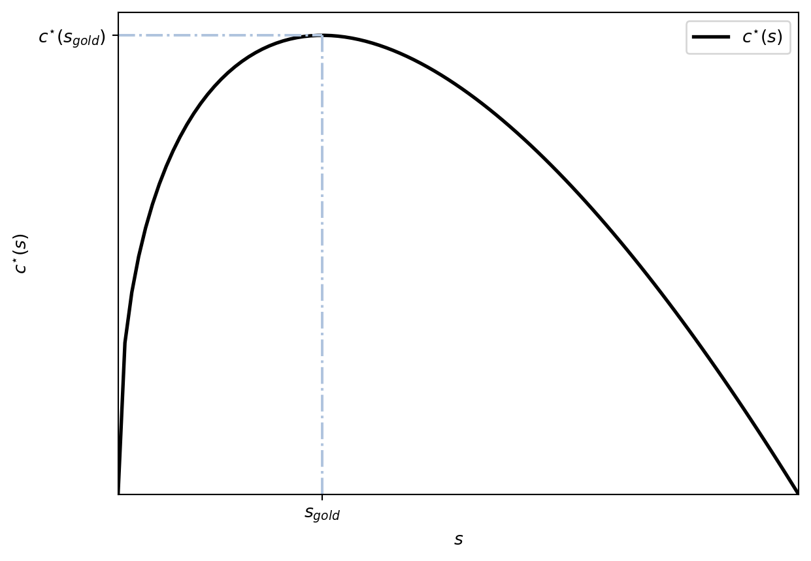
Si ensuite on maximise \(c^\star\) par rapport à \(s\) :
\[\begin{align} \frac{\mathrm{d} \overbrace{\left(\frac{s}{n+\delta}\right)^\frac{\alpha}{1-\alpha}-(n+\delta)\left(\frac{s}{n+\delta}\right)^\frac{1}{1-\alpha}}^{c^\star}}{\mathrm{d} s} &= 0 \implies \\ \frac{\alpha}{1-\alpha}\left(\frac{s}{n+\delta}\right)^\frac{2\alpha-1}{1-\alpha}-(n+\delta)\frac{1}{1-\alpha}\left(\frac{s}{n+\delta}\right)^\frac{\alpha}{1-\alpha} &= 0 \implies s_{gold} = \alpha \end{align}\]
Vérification
Pour rappel, le niveau \(s_{gold}\) est celui pour lequel \(f^\prime(k(s_{gold})) = n+\delta\). Vérifions que, pour la fonction de production Cobb-Douglas, \(s_{gold} = \alpha\) implique \(f^\prime(k(s_{gold})) = n+\delta\).
Avec une fonction Cobb-Douglas \(f^\prime [k] = \alpha k^{\alpha-1}\). Le niveau stationnaire du capital est \(k^\star = \left(\frac{s}{n+\delta}\right)^\frac{1}{1-\alpha}\), et lorsque \(s = \alpha\) \(k^\star\) devient \(\left(\frac{\alpha}{n+\delta}\right)^\frac{1}{1-\alpha}.\) Ainsi \(f^\prime \left[k^\star\right] = \alpha \left(\frac{\alpha}{n+\delta}\right)^{-1} = n+\delta\). On voit donc bien qu’avec \(s_{gold} = \alpha\), \(f^\prime \left[k^\star (s_{gold})\right] = n + \delta\), comme la théorie le prédit.
Comme nous l’avons mentionné, deux effets jouent leur rôle lorsque la valeur de \(s\) change: lorsque \(s\) augmente, le capital stationnaire \(k^\star\) augmente, ce qui entraîne une augmentation de la production (\(f(k^\star) \uparrow\)).
- Comme la production a augmenté, il est possible de consommer plus (\(c^\star = f(k^\star) - (n+\delta)k^\star\)).
- En même temps, plus de capital implique une plus grande dépréciation ($ (n+)k^$).
Graphiquement, on peut observer l’effet d’un changement dans \(s\) comme suit. L’hauteur de la courbe \((n+\delta)k\) indique le niveau de dépréciation. À l’état stationnaire, l’épargne compense exactement la dépréciation, et donc, ce niveau indique la partie de la production qui est consacrée à l’épargne-investissement. Ainsi, ce qui reste entre \(f(k)\) et \((n+\delta)k\) est la consommation à l’état stationnaire \(c^\star\).
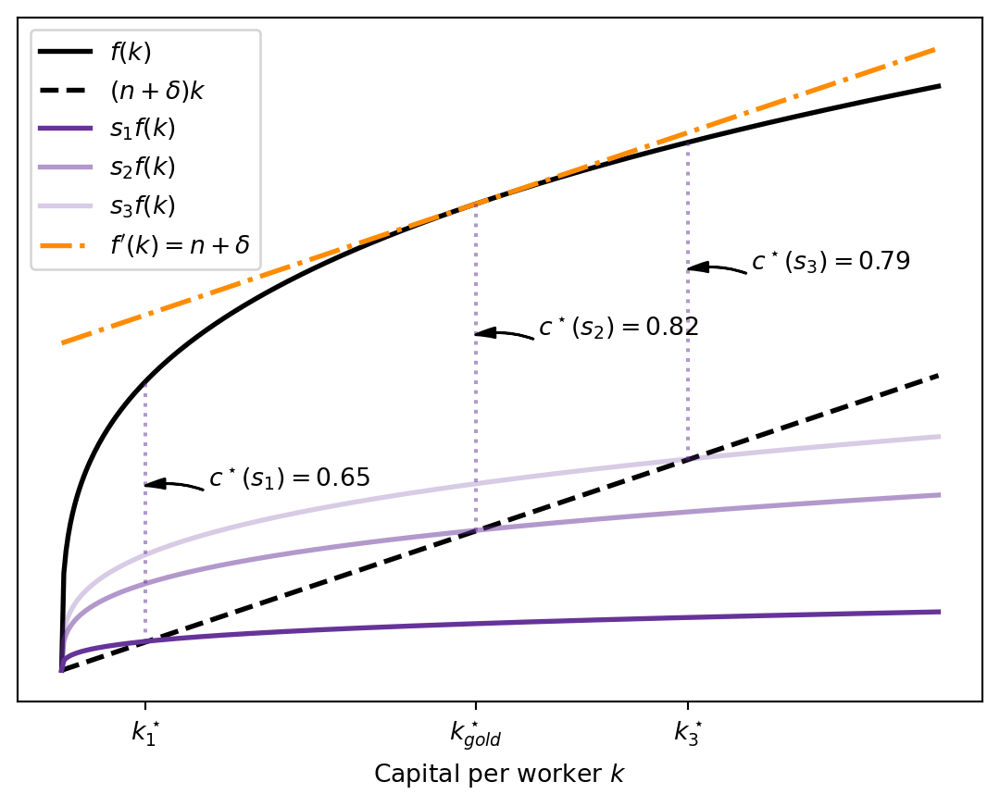
3.7.1 Inefficacité dynamique
Le taux d’épargne \(s_{gold}\) est celui qui maximise le niveau de consommation à l’état stationnaire. Avec une fonction de production Cobb-Douglas, \(s_{gold} = \alpha\). On peut imaginer que, pour la plupart des économies, le taux d’épargne ne coïncide pas avec l’optimal. Cependant, il est possible de déterminer les cas où l’économie pourrait faire mieux.
Imaginons que l’économie soit à son état stationnaire, et supposons que le taux d’épargne soit \(s_1 > s_{gold}\). Comme \(s_1 \neq s_{gold}\), la consommation stationnaire est susceptible d’être augmentée en réduisant le niveau d’épargne jusqu’à \(s_{gold}\). Cela constitue une stratégie gagnante :
- Tout d’abord, on diminue le taux d’épargne de \(s_1\) à \(s_{gold}\).
- L’économie avait accumulé un niveau de capital \(k^\star(s_1) > k^\star(s_{gold})\). En réduisant l’épargne, la dépréciation fait diminuer le niveau de capital, et celui-ci converge vers \(k^\star(s_{gold})\).
- Pendant la transition, le niveau de consommation est supérieur à ce qu’on avait (\(c^\star(s_1)\)).
- Lorsque l’économie atteint le nouvel état stationnaire \(k^\star(s_{gold})\), le niveau de consommation est maximal.
Ainsi, avec la diminution du taux d’épargne, tout le monde gagne pendant la transition et à l’état stationnaire. Ce type de situation est connu comme une situation d’inefficacité dynamique et, dans le modèle de Solow, apparaît lorsque \(s > s_{gold}\).
En revanche, si \(s_1 < s_{gold}\), il est impossible d’améliorer la consommation pour tous à tout moment. Il est certain que, en augmentant le niveau d’épargne, l’économie converge vers un meilleur état stationnaire. Cependant, pendant la transition, la consommation diminue : il est nécessaire d’épargner davantage, ce qui implique une réduction de la consommation.
3.7.2 Questions
Imaginez qu’une économie soit à son état stationnaire \(k^\star\) et que \(f^\prime(k^\star) > n + \delta\). Supposons qu’une politique augmente le taux d’épargne : le nouveau niveau de consommation stationnaire serait-il supérieur ou inférieur à celui d’aujourd’hui ?
Si \(f^\prime(k^\star) > n + \delta\), l’économie se trouve en région d’inefficacité dynamique. En effet, la consommation est maximale lorsque \(f^\prime(k) = n + \delta\), et si \(k\) est supérieur à ce niveau, la consommation diminue. Pour le voir, nous savons que \(c^\star = f(k^\star) - (n+\delta)k^\star\). Ainsi, \(\frac{\partial^2 c}{\partial k^2} = f^{\prime \prime}(k) < 0\), et la courbe a une forme de U inversé. Par conséquent, si \(k\) est supérieur à \(k_{gold}\) et on augmente le capital, la consommation diminue. C’est bien notre cas : l’augmentation de \(s\) augmente le niveau de \(k^\star\), plongeant l’économie davantage dans la région inefficace.
3.8 Croissance économique
Le modèle de Solow prédit que toute économie converge vers son état stationnaire. Ainsi, une économie qui débute avec un niveau de capital par habitant faible (\(k_0\)) verra celui-ci augmenter jusqu’à ce qu’il atteigne l’état stationnaire. Une fois que l’économie a atteint son état stationnaire, elle y reste. Qu’est-ce que cela signifie ?
3.8.1 Croissance à l’état stationnaire
Commençons par analyser l’état stationnaire. Comme \(k^\star\) est constant, la production par habitant \(f(k^\star)\) est également constante. Étant donné que \(y^\star = f(k^\star)\) représente le PIB par habitant, la conclusion est que, à long terme, le PIB par habitant est constant. Si l’on préfère mesurer le bien-être avec la consommation par habitant, la conclusion est la même car \(c^\star = (1-s)f(k^\star)\).
D’autres indicateurs, tels que le PIB total, sont également importants, et nous pouvons montrer qu’à l’état stationnaire, la consommation totale, la quantité totale de capital et le PIB total augmentent au rythme de \(n\). Pour cela, il suffit de reprendre les définitions et de calculer le taux de croissance de chaque variable. On indique le taux de croissance de la variable \(x\) par \(g_{x}\). Lorsque le temps est continu, il se calcule comme suit: [^8]
\[ g_{x} = \frac{\dot{x}}{x}. \]
Ainsi:
- Capital total :
\[\begin{align} k \equiv \frac{K}{L} & \implies K = kL \implies g_{K} = \frac{\dot{kL}}{kL} = \\ & \frac{\dot{k}L}{kL} + \frac{k\dot{L}}{kL} = \frac{\dot{k}}{k} + \frac{\dot{L}}{L} = \\ & \quad \quad g_{K} = g_{k} + g_{L} = 0 + n = n. \end{align}\]
Ici, \(g_{k} = 0\) car nous sommes à l’état stationnaire et, par définition, \(k\) est constant. * Production totale : \(y \equiv \frac{Y}{L} \implies Y = yL \implies g_{Y} = \frac{\dot{yL}}{yL} = g_{y} + g_{L} = n\) Cela est dû au fait que \(y\) à l’état stationnaire est constante. Une autre manière de voir le même:
\[\begin{align} Y & = K^\alpha L^{1-\alpha} \implies g_{Y} = \frac{\dot{K^\alpha L^{1-\alpha}}}{K^\alpha L^{1-\alpha}} = \\ & \frac{\alpha K^{\alpha-1}\dot{K}L^{1-\alpha} + (1-\alpha)K^\alpha L^{-\alpha}\dot{L}}{K^\alpha L^{1-\alpha}} \\ \\ g_{Y} &= \alpha \dot{K} + (1-\alpha)\dot{L} = \alpha n + (1-\alpha) n = n. \end{align}\]
- Consommation : \(c \equiv \frac{C}{L} \implies C = cL \implies g_{C} = g_{c} + g_{L} = 0 + n.\)
Dans le modèle de Solow, à l’état stationnaire, les variables agrégées augmentent à la même vitesse que les facteurs exogènes, ce qui conduit à une conclusion insatisfaisante. Cependant, selon les données, les économies développées, supposées être proches ou à leur état stationnaire, connaissent une croissance économique par habitant : le revenu par habitant augmente, la production par habitant augmente, etc. Il convient donc de proposer des changements dans le modèle pour mieux l’aligner avec les données.
3.8.2 Croissance pendant la transition et convergence entre pays
Un pays avec un niveau de capital inférieur à son état stationnaire, c’est-à-dire \(k < k^\star\), observe un processus de croissance économique vers cet état stationnaire. Pendant cette transition, le taux de variation du capital, noté \(\dot{k}\), est positif et le capital s’accumule. De plus, à mesure que l’on se rapproche de l’état stationnaire, le taux de croissance du capital diminue jusqu’à atteindre zéro. Il est donc clair que pendant cette transition, on observe une croissance économique à la fois en termes de revenu par habitant et en termes de revenu total.
En effet, avec \(\dot{k} > 0\), le taux de croissance du capital par habitant est positif : \(g_{k} = \frac{\dot{k}}{k} > 0\). Par conséquent, la production par habitant et la consommation par habitant augmentent également. Avec une fonction de type Cobb-Douglas, nous avons: \(g_{y} = g_{k^\alpha} = \alpha g_{k} > 0\) et \(g_{c} = g_{(1-s)y} = g_{y} > 0\).
Les variables en termes de revenu total augmentent également plus rapidement qu’auparavant. Par exemple, le taux de croissance du capital total est donné par \(g_{K} = g_{Lk} = g_{k} + g_{L} = \frac{\dot{k}}{k} + n > n\).
3.9 Convergence
3.9.1 Convergence absolue
Nous avons précédemment mentionné que le taux de croissance du capital par habitant est plus élevé lorsque l’économie est éloignée de son état stationnaire. En effet, le taux de croissance du capital par habitant est donné par l’équation:
\[ g_{k} = \frac{\dot{k}}{k} = \frac{s f(k) - (n+\delta)k}{k} = s\frac{f(k)}{k} - (n + \delta). \]
Ainsi,
\[ \frac{\partial g_{k}}{\partial k} = s \frac{\overbrace{f^\prime (k) k - f(k)}^{=(-1)w}}{k^2} \stackrel{Cobb-Douglas}{=} s (-1) \frac{\overbrace{(1-\alpha)k^\alpha}^{=w}}{k^2} < 0. \]
En conclusion, lorsque le capital par habitant s’accumule, son taux de croissance devient plus faible.
Si cela est vrai, cela signifie que les pays les plus pauvres devraient afficher un taux de croissance plus élevé. Par conséquent, nous devrions observer un rattrapage, c’est-à-dire que les pays les plus pauvres connaîtraient un taux de croissance plus élevé que les pays les plus riches, ce qui entraînerait une réduction de l’écart entre eux. Cette hypothèse selon laquelle les économies les plus pauvres ont une croissance plus forte que celle des économies les plus riches sans tenir compte de leurs caractéristiques est appelée convergence absolue. Cependant, les données rejettent clairement cette prédiction.
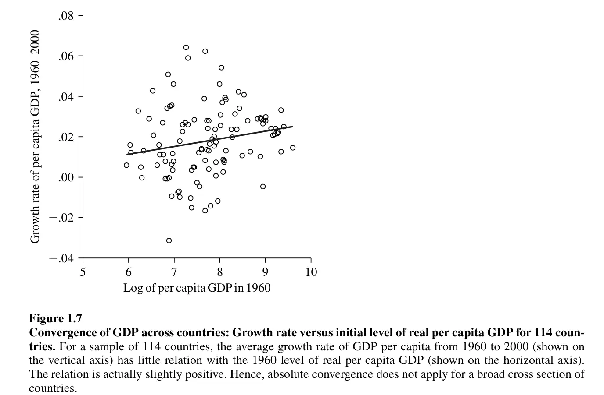
3.9.2 Convergence conditionelle
Une hypothèse sous-jacente à l’idée de la convergence absolue est que les paramètres de toutes les économies sont les mêmes. Dans le modèle de Solow, les paramètres du modèle incluent le taux d’épargne (\(s\)), le taux de croissance de la population (\(n\)), le taux de dépréciation (\(\delta\)), et la part du capital (\(\alpha\)). Nous avons déjà vu comment un taux d’épargne différent implique un état stationnaire différent.
S’il est vrai que des groupes de pays similaires convergent vers un même état stationnaire, alors dans ces groupes, les pays les moins riches devraient connaître un taux de croissance plus élevé que les pays les plus riches (au sein du groupe de pays). Cette idée selon laquelle des pays similaires convergent vers un même état stationnaire est appelée convergence conditionnelle, car elle dépend des caractéristiques propres aux pays. Dans ce cas, les données confirment l’idée de la convergence conditionnelle.
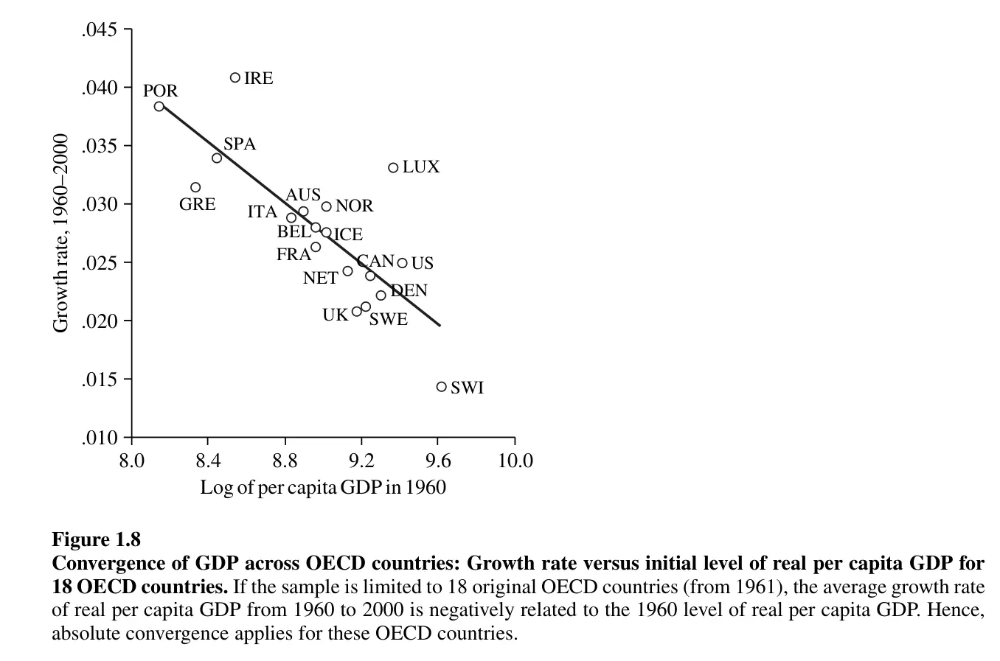 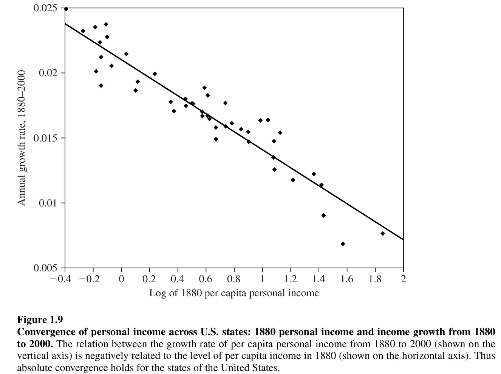
3.10 Progrès technologique
L’équation la plus importante du modèle de Solow est la caractérisation de l’état stationnaire :
\[ \dot{k} = s f(k) - (n+\delta) k = 0. \]
Une conséquence de la manière dont nous avons modélisé l’économie est que, à l’état stationnaire, la croissance du PIB par habitant est nulle. Cependant, cette prédiction contredit les données observées.
Une façon d’aligner le modèle de Solow avec l’observation selon laquelle les variables par habitant augmentent est d’ajouter le progrès technologique. Cela implique de modifier les hypothèses du modèle de la manière suivante :
- La fonction de production intègre le progrès technologique : \(Y(t) = F\left[K(t), A(t)L(t)\right] = K(t)^\alpha (A(t)L(t))^{1-\alpha}\) où \(A(t)\) représente le niveau de technologie.
- Le taux de croissance de la technologie est exogène et constant : \(g_{A} = x > 0\).
La formulation de la fonction de production inclut le terme \(A(t)\) en multipliant le nombre de travailleurs (\(L\)). Lorsque cela se produit, on dit que la technologie est “labour-augmenting”, c’est-à-dire qu’une amélioration technologique nous permet de produire autant avec moins de travailleurs. Dans le cas général du modèle de Solow, l’introduction de la technologie de cette manière est nécessaire pour obtenir un état stationnaire avec des variables constantes. Cependant, avec la formulation Cobb-Douglas, cela n’est pas nécessaire.[^8]
Normalement, avec l’introduction de la technologie, on parle de “travailleurs effectifs”, de “capital par travailleur effectif”, de production “par travailleur effectif”, etc. En effet, nous devons redéfinir les anciennes variables par habitant pour les exprimer en termes de “travailleurs effectifs”.
\[ \hat{k} \equiv \frac{K}{AL}\,\ \hat{y} \equiv \frac{Y}{AL}\,\ \hat{c} \equiv \frac{C}{AL} \]
La fonction de production reste homogène de premier degré :
\[ f(\hat{k}) \equiv F\left[\frac{K}{AL}, 1\right] = \frac{K^\alpha(AL)^{1-\alpha}}{AL} = \hat{k}^\alpha \]
3.10.1 Accumulation de capital
Le capital continue de s’accumuler comme avant : les ménages épargnent une fraction constante \(s\) de la production. L’épargne est transformée en investissement et s’ajoute au stock de capital, tandis que la dépréciation le diminue. Ainsi, en termes agrégés, rien ne change :
\[ \dot{K} = s F[K, AL] - \delta K = s K^\alpha (AL)^{1-\alpha} - \delta K. \]
Comme toujours, pour éviter de suivre 3 variables (\(K, L, A\)), on se focalise uniquement sur l’évolution de \(\hat{k}\). Ainsi:
\[ \begin{aligned} \dot{\hat{k}} &= \dot{\frac{K}{AL}} = \frac{\dot{K}AL - \dot{A}KL - \dot{L}AK}{A^2L^2} = \frac{\dot{K}}{AL} - \frac{\dot{A}}{A}\hat{k} - \frac{\dot{L}}{L}\hat{K} = \\ &= \frac{sF[K,AL]-\delta K}{AL} - x \hat{k} - n \hat{k} = s f(\hat{k}) - (x + n + \delta)\hat{k} = \\ & = s\hat{k}^\alpha - (x+n+\delta)\hat{k}. \end{aligned} \]
3.10.2 État stationnaire
À partir de l’équation d’accumulation de capital, on peut caractériser l’état stationnaire de l’économie comme la valeur de \(\hat{k}\) telle que \(\dot{\hat{k}} = 0\). Cette fois, avec le progrès technologique, on trouve :
\[ \hat{k}^\star = \left(\frac{s}{n+d+x}\right)^\frac{1}{1-\alpha} \]
Si on le compare avec l’état stationnaire de l’économie sans progrès technologique \(k^\star = \left(\frac{s}{n+d}\right)^\frac{1}{1-\alpha}\), il est inférieur. Comment est-ce possible ? C’est parce que nous ne comparons pas la même chose : avec le progrès technologique, \(\hat{k}\) mesure le capital par unité effective de travail. Si \(\hat{k} \equiv \frac{K}{AL}\), on a \(k = \hat{k}A\).
3.10.3 Progrès technologique et croissance économique
Enfin, nous pouvons observer l’effet du progrès technologique sur la croissance économique.
Tout d’abord, dans une économie sans progrès technologique, le niveau de capital par travailleur ne change pas (\(\dot{k} = 0\)) une fois atteint l’état stationnaire. Cependant, cela est en contradiction avec les données.
Avec le progrès technologique, l’état stationnaire est défini par \(\dot{\hat{k}} = 0\). Par conséquent, puisque \(\hat{k} = \frac{K}{AL}\), cela implique que \(k = \hat{k}A\) et si \(A\) augmente, le niveau de capital par habitant (\(k\)) augmente également. Il est possible de calculer son taux de croissance: \(g_{k} = g_{\hat{k}} + g_{A} = 0 + x = x > 0\).
Le fait d’avoir incorporé le progrès technologique dans le modèle permet une croissance soutenue de l’économie, même à l’état stationnaire. Les autres variables par habitant augmentent également: \(g_{y} = g_{\hat{y}} + g_{A} = 0 + x\) et \(g_{c} = g_{\hat{c}} + g_{A} = 0 + x\).
3.11 Conclusions et implications
3.11.1 Croissance économique
Dans le modèle de Solow, si toutes les conditions des fonctions de production néoclassiques sont respectées, la croissance économique de long terme necessite d’un taux de croissance (exogène) de la technologie. Pour rappel, le modèle atteint toujours un état stationnaire auquel le taux de croissance (de la variable \(k\)) devient zéro. Ainsi, si \(k\) mesure le capital par tête, elle cesse d’augmenter; même si \(K\) augmente au taux \(n\). Au contraire, si \(k\) se définit comme \(\frac{K}{AL}\), la croissace du capital par tête est \(g_A > 0\).
L’hypothèse du modèle responsable de ce resultat est la condition d’Inada qui force la productivité marginal vers zéro quand le capital devient abondant.
3.11.2 Vraisemblance du modèle de Solow
Si l’on souhaite comprendre les écarts de revenu par habitant dans le monde, le modèle de Solow nous offre deux alternatives. En effet, nous avons l’équation \(y = Af(\hat{k}) = A^{1-\alpha}f(k) = A^{1-\alpha}k^\alpha\), ce qui signifie que nous avons soit :
- Des écarts dans le niveau de capital par habitant, soit
- Des écarts dans le niveau de technologie.
D’un côté, seule la croissance de la technologie \(A\) est capable de générer une croissance économique dans l’état stationnaire. Si l’on se concentre en dehors de l’état stationnaire, il est facile de voir que la variable \(k\) ne peut pas expliquer les écarts de richesse. Les estimations typiques pour la valeur de \(\alpha\) donnent \(\alpha = \frac{1}{3}.\)
Prenons l’exemple de deux pays, \(J\) et \(K\), ayant le même niveau de \(A\), où \(J\) est dix fois plus riche que \(K\) en termes de revenu par habitant, c’est-à-dire que \(y_{J} = 10 y_{K}\). Selon la fonction de production Cobb-Douglas, \(y_{J} = A^{1-\alpha}k_{J}^\alpha\) et \(y_{K} = A^{1-\alpha}k_{K}^\alpha\). Par conséquent, \(\frac{y_{J}}{y_{K}} = 10\) implique \(\frac{A^{1-\alpha}k_{J}^\alpha}{A^{1-\alpha}k_{K}^\alpha} = 10\). En développant cette équation, on obtient \(\left(\frac{k_{J}}{K_{k}}\right)^{\alpha} = 10 \implies k_{J}^\alpha = 10 k_{K}^{\alpha}.\) Si \(\alpha = \frac{1}{3}\), alors \(k_{J} = 1000 k_{K}\). Ainsi, pour expliquer un écart de 10 en termes de revenu par habitant, il faudrait que l’écart de capital par habitant soit de 1000. Or, nous ne voyons pas ce type d’écart dans le monde réel.
Par exemple, le PIB par habitant en Allemagne est de 66132 (2023) tandis qu’en France il est de 58828, soit un écart de 1.1241. Pour expliquer cet écart uniquement par une différence de capital par habitant, il faudrait que l’Allemagne ait un niveau de capital par habitant \(1.1241 = \left(\frac{k_{\text{GER}}}{k_{\text{FRA}}}\right)^\frac{1}{3} \implies k_\text{GER} = 1.42 k_{\text{FRA}}\), soit environ 42% plus élevé que celui de la France. Cela n’est pas crédible.
Par conséquent, si l’on prend le modèle de Solow au sérieux, les différences de PIB par habitant devraient provenir des différences de technologie, plus précisément des différences d’efficacité du travail. Malheureusement, le modèle de Solow ne nous dit rien sur la façon dont \(A\) est créé, les raisons pour lesquelles \(A\) croît plus rapidement dans un pays que dans un autre, etc. De plus, le terme efficacité du travail est un terme vague qui englobe tout ce qui n’est pas mesurable. Il englobe nos connaissances, notre éducation, notre manière d’organiser le travail, nos infrastructures, notre acceptation du risque, nos droits de propriété, etc.
La valeur \(\alpha\) prend généralement des valeurs proches de \(\frac{1}{3}\). Cela correspond à la rémunération totale du capital dans le modèle lorsque les marchés sont concurrentiels. Pour le voir, il suffit de calculer la fraction de la production totale reçue par les détenteurs de capital.
Remarque
Cela n’est valable qu’avec une fonction de production Cobb-Douglas. Autres formes fonctionelles n’impliquent pas que les détenteurs de capital reçoivent une fraction constante de la production.
\[\begin{align} \frac{RK}{Y} &= \frac{R \frac{K}{L}}{\frac{Y}{L}} = \frac{Rk}{y} = \\ &=\frac{f^\prime(k) k}{f(k)} = \frac{\alpha k^{\alpha-1}k}{k^\alpha} = \alpha. \end{align}\]
Ainsi, en ayant une approximation du total versé en intérêts par rapport à la production, il est possible d’estimer \(\alpha\).
Démonstration
On cherche une forme fonctionnelle telle que: \(\frac{f^\prime (k) k}{f(k)} = z\) où \(z\) c’est une constante. Il s’agit donc de résoudre une équation différentielle:
\[ \frac{f^\prime(k)}{f(k)} = z \frac{1}{k} \implies \int \frac{f^\prime(k)}{f(k)} \mathrm{d}k = z \int \frac{1}{k} \mathrm{d}k \]
En conséquence:
\[ \begin{aligned} \log(f(k)) &= z \log(k) + \log(C) \\ \log(f(k)) &= \log(Ck^z) \\ f(k) &= Ck^z \end{aligned} \]
Ainsi, la seule forme fonctionnelle impliquant que le capital reçoive une fraction constante de la production est la fonction de type Cobb-Douglas: \(f(k)=k^\alpha.\)
3.11.3 \(A\) comme la mésure de nos non-connaisances : comptabilité de la croissance
Il est relativement simple de montrer que \(A\) mesure tout ce qui n’est pas mesurable. À partir du modèle de Solow, nous avons que le taux de croissance du PIB par habitant est donné par :
\[ \begin{aligned} y &= \frac{Y}{L} = \frac{K^\alpha (AL)^{1-\alpha}}{L} = K^\alpha L^{-\alpha} A^{1-\alpha} \implies \\ & \implies g_{y} = \alpha(g_{K} - g_{L})+(1-\alpha)g_{A}. \end{aligned} \]
Les taux de croissance du PIB par habitant (\(g_{y}\)), du capital total (\(g_{K}\)) et de la population (\(g_{L}\)) sont faciles à estimer. En outre, si les marchés sont concurrentiels et si le capital reçoit son produit marginal, \(\alpha\) correspond au pourcentage reçu par les détenteurs de capital comme fraction de la production (\(\alpha \approx \frac{1}{3}\)). Ainsi, le dernier terme \((1-\alpha) g_{A}\) représente en fait la part de la croissance économique que nous ne pouvons pas expliquer avec les facteurs observables. Ce terme est connu sous le nom de “résidu de Solow”.
Souvent, on pense au résidu de Solow comme étant la croissance technologique, mais en réalité, il englobe tout ce qui n’est ni capital ni travail. Comme nous l’avons dit, cela comprend la technologie, mais aussi l’éducation, l’organisation industrielle, les infrastructures, etc. C’est en fait une mesure de notre ignorance des facteurs qui contribuent à la croissance économique.
Voir Barro et Sala-i-Martín (p. 23, 2004).↩︎
Le modèle de Solow ne prend pas explicitement en compte l’utilité des agents. Ainsi, au lieu d’utiliser une formulation telle que \(U(c(t)) = u(c(t)) \stackrel{ex}{=} \log(c(t))\), on suppose que plus de consommation est toujours préférable (ce qui est en réalité vrai pour les fonctions d’utilité typiques).↩︎
On peut imaginer que chaque ménage épargne \(s(t)\), qu’il y a \(L(t)\) ménages dans l’économie et donc \(S(t) = s(t)L(t)\).↩︎
Comme nous le verrons, l’état stationnaire est le point où \(k\) ne croît ni ne diminue, et vers lequel l’économie converge. Dans d’autres modèles, ce que l’on retrouve, c’est la où les variables principales augmentent à une vitesse constante.↩︎
Le cas allemand était temporaire et sert seulement à motiver la description. Notre analyse porte sur des changements permanents de \(s\).↩︎
Avec la fonction de production Cobb-Douglas, il n’est pas important de savoir si la technologie affecte le travail, le capital ou la production totale, car on peut toujours réécrire la fonction de production de manière à ce que la technologie ne multiplie que le travail. Ainsi, si \(A K^\alpha L^{1-\alpha} \rightarrow K^\alpha (A^\frac{1}{1-\alpha} L)^{1-\alpha}\), et si \((AK)^\alpha L^{1-\alpha} \rightarrow K^\alpha (A^\frac{1}{\alpha} L)^{1-\alpha}\).↩︎